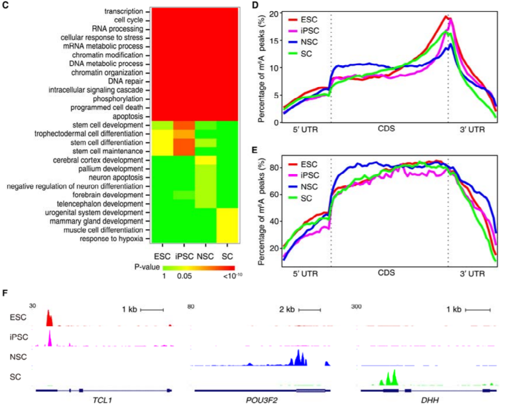
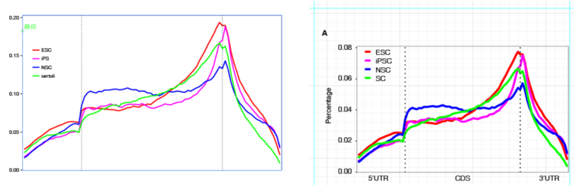
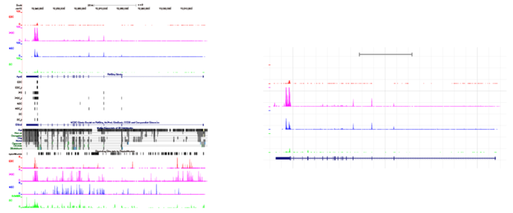

5 图形排版
成果发表是科研过程中不可缺的一部分，发表成果又少不了图形展示。文章图表排版是否整齐规范、协调一致、重点突出对一篇文章的发表也是有不少贡献的。此外做科研的人都爱看脸，文章中的图表是重要的颜面之一。生信宝典系列文章中，R作图也是受到最多欢迎的一部分。
读文献时，看到文章中的图，就一直好奇是怎么拼出来的，尤其是怎么保证图形中字体的大小一致的。如果是统一用R画图，也许可以实现这一点，设置一样的字体、一样的长宽，这样只要图形缩放比例一致，字体理论上也一致。或者使用cowplot, gridExtra, ggpubr等工具也可以组合多个图倒一起 (像前面的示例)。但不同的图有不同的边缘设置，实际操作起来，却也不总是顺利。高手们，比如推出生信宝典傻瓜系列的海哥擅用PPT进行修改排版，我学了下，没学会。后来查阅资料，发现有这么一款工具很强大，Adobe Illustrator简称AI，翻译成汉语就是。人工智能
著名的Adobe公司出品，应该都不陌生。试用后（买不起，也只能用试用版；如果有钱，还是推荐购买正版，维护原作者的权益），发现果然很强大。
5.0.1 矢量图和标量图
矢量图是使用直线和曲线来描述图形, 这些图形的元素是一些点、线、矩形、多边形、圆和弧线等等, 它们都是通过数学公式计算获得的。矢量图形最大的优点是无论放大、缩小或旋转等不会失真；最大的缺点是难以表现色彩层次丰富的逼真图像效果。常见的矢量图有PDF, SVG, EPS等格式。如果图形中有文字, 并且文字可以复制, 则可初步判断为矢量图。
矢量图的任何一个地方都可以挑出来修改，某个边框不好看，删掉；线条的粗细不统一，设置成一样的；某条线的颜色想重点突出下，单独修改 (这部分最好还是在画图时就修改好，会更协调，当然AI也没问题)；图中有了多余的元素，删掉；添加文字、设置成统一字体、统一大小更没问题；画个简单的模式图，没问题；不同的子图拼在一起，没问题；自此，再也不愁文章的拼图了。
与矢量图相对应的就是标量图了, 常见的png, jpg, gif格式等, 是由像素点构成, 放大到一定程度会出现马赛克效果。图中的文字不可复制, 元素不可拆分。
5.0.2 矢量图的制作
- 常规图：
Excel, 生成的图可以直接拷贝到AI里面修改R,Perl,Python等程序语言输出pdf,eps格式的图 (详见公众号中R作图系列)
- 常用工具的出图
- 二代测序出图
UCSC–PDF;IGV–SVG;epigenomegateway-SVG; 在高通量数据可视化文章中也有介绍 - Motif
Weblogo-eps - 作图软件 Graphpad
- 二代测序出图
5.0.3 矢量图编辑工具
主要有 Gimp, Adobe illustrator, Inkscape, image magik, photoshop, latex。适用之后, 从稳定性还是易用性来讲, Adobe illustrator是最好的一款。但是是收费软件, 在线会有一些试用版, 供测试时用。
5.0.4 作图基本原则
- 图形中文字的字体保持统一, 一般使用
Helevetica或Arial - 符号一般使用
Symbol字体, 常见符号有′,β等 - Panel的字号(A,B,C,D)一般比其余的文字大一号, 上下左右对齐
- 文字特别密集的地方字体可适当缩小, 原则是看着协调
- 图和图之间的距离在空间允许的情况下尽可能的大

- 一篇文稿所有柱状图理论上柱子的宽度保持一致
- 柱状图的
Error bar宽度一致 - 坐标轴上的刻度尺宽度, 长度一致
- 坐标轴的宽度、颜色一致
- 胶图的泳道对齐

5.0.5 作图中的要点注意
- 标准化, 便于位置调整
- 从最开始作图, 到文章投稿、修改、定稿, 中间会不断调整, 子图会根据文章需要不断删减, 调整位置。因此标准化之后, 就可以很简单的互换位置就可以了
- 每个子图的长宽尽量一致
- 每个相似子图内部元素的特征一致, 比如柱子的宽度 (
6 mm), 柱子之间的距离, 坐标轴的刻度的宽度 (0.7 mm), 误差线的宽度 (1 mm), P-value连接线宽度 (6 mm), 胶图泳道的宽度等
- 合理利用对齐工具, 左右对齐、横向分布、纵向分布等, 即保证对齐效果, 又免去人为调整的繁琐
- 在选择单个元素时尽量使用直接选择工具
- 作图要做到自己满意, 自己对自己负责；当你觉得一个地方不合适需要调整时, 一定要及时修改；如果怕麻烦现在没调整, 过几天别人发现或自己觉得不舒服也还是会再调整的。所有要做好充足的准备和充足的工作
- 保留备份, 保留备份, 保留备份.每次大的修改都要保留原始版本, 因为不知道明天是否还会改回来
5.0.6 Adobe Illustrator中的基本概念和操作描述
- 编组：性质相似或者需要同时修改的部分可以编为一组，方便处理。双击一组内容，就可以进入编组内部，对编组的每个元素修改；并且编组外的元素处于屏蔽状态，操作起来不会受到干扰。
- 剪切蒙版：如果想剪切掉图中的某一部分，可以绘制一个矩形、圆形或任意不规则形状覆盖住需要保留的部分，然后同时选中这两个元素（绘制的形状框在被剪切的图之上），按右键，选择剪切蒙版，就可以完成剪切操作。而在修改图时，也可以不断的释放剪切蒙版，方便对不同图层的操作。
- 直接选择工具：可以无视编组和剪切蒙版，对选中并且只是选中的部分进行操作。这在删除多余的内容和边框时会经常用到。
- 魔棒工具： 选择类似属性的组分，统一操作。
- 吸管工具：给一个组分赋予另一个组分的属性。
- 对齐工具：用于组分的对齐和分布，在设置坐标轴的标记文字时很有用，省去了一个个手动对齐的操作。只要对齐两端，按一下按钮中间的内容就自动与刻度线对齐了。
- 其它的就靠大家不断的尝试、体验、操作了。多选、多点、多查，慢慢就都熟练了。
另外翻阅到之前准备文章期间做的图形排版教程。当时每天都在不断的调整图和排版, 心得体会比现在更多些, 也录制了视频, 但是无声版, 录制完之后为EXE格式。如果您已观看过文章用图的修改和排版视频教程, 也自己操作过, 有了一定基础, 还想进一步的了解, 可以看看这份无声版的记录是否能有些帮助。
5.0.7 视频教程
(更多视频在B站：https://space.bilibili.com/362709786)
第一个视频以绘制的线图为例，展示如果修改、调整矢量图的每个部分。ggplot2出品的矢量图整体逻辑比较清晰，一层层的叠加，修改起来也比较方便，没有太多难点；关键是熟悉用到的按钮的使用方式和快捷键的操作。
第二个视频以UCSC绘制的测序峰图为例，展示如何对稍微复杂一些的图进行修改、删除多余内容。
第三个视频是剪切蒙版的使用和针对其它不同类型图的特殊操作。
5.0.8 动图教程
左边是修改前的, 右边是成品或近成品截图。
- AI编辑线图.exe
 2. AI_柱状图.exe

- AI_UCSC.exe

- AI_设计.exe

图形导出
可以导出为PDF、TIFF格式；最好用PhotoShop导出, 分辨率高, 文件小。
视频文件统一下载地址：链接: https://pan.baidu.com/s/1dFcWadV 密码: (b4mw)